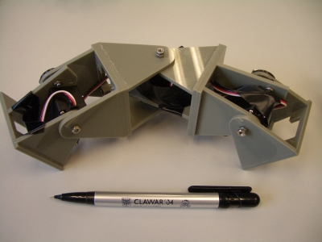

Minicube-2
es la configuración mínima de tipo “gusano” (topología 1D)
que se puede desplazar en un plano. Está formada sólo por 3
módulos Y1,
pero al menos puede realizar cinco tipos de movimientos:
* Desplazamiento en línea recta
* En arco
* Desplazamiento lateral
* Rotaciones paralelas al suelo
* Rodar
Lo mejor es ver el robot en acción:

Y claro, no podría faltar la versión FRIKI 🙂